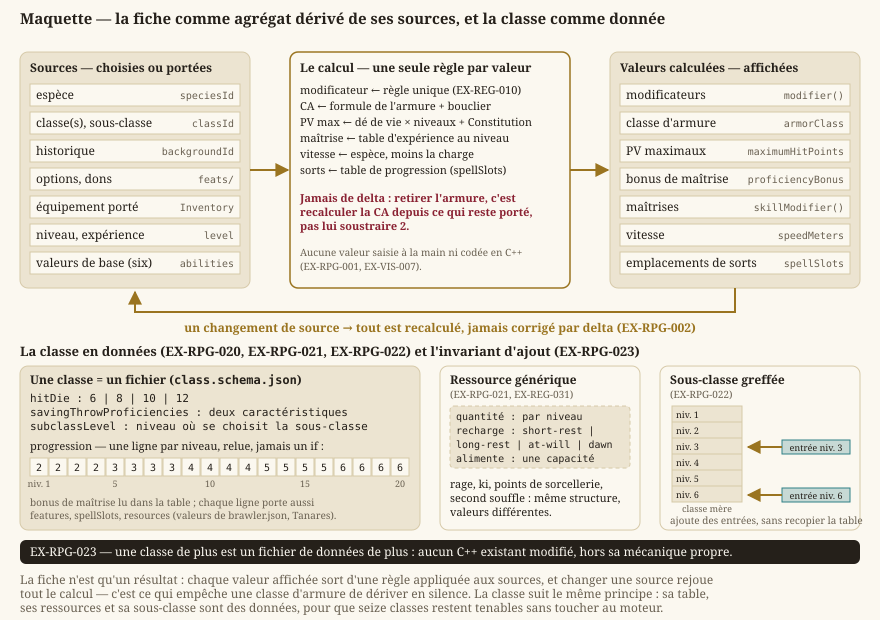

Personnage et progression
Statut : fiche livrée, progression à venir. La fiche de personnage, ses caractéristiques calculées, les espèces, les historiques et les options de création sont livrés (
LOT-13,LOT-36,LOT-38,LOT-43). Ce qui manque est ce qui fait évoluer un personnage : le socle de classe (LOT-131), les quatre classes de la démo (LOT-132→LOT-135), puis l'expérience et les niveaux (LOT-200). Dépend deregles-d20.mdet decontenu.md.
Le personnage est l'agrégat que tout le reste du jeu consulte. Ce document dit ce qu'il agrège, d'où viennent les valeurs, et comment une classe s'ajoute sans que le moteur ait à la connaître — ce dernier point étant la condition pour que seize classes soient tenables par une seule personne.
1. La fiche


Le dessin dit où passe la frontière : rien à droite n'est saisi, et rien à gauche n'est en C++. Une valeur qui violerait l'un ou l'autre se voit sur ce schéma avant de se voir en jeu.
- EX-RPG-001 — La fiche de personnage est un agrégat dérivé : espèce, classes, historique, options et équipement portés en sont les sources, et toute valeur affichée (modificateurs, classe d'armure, points de vie maximaux, maîtrises, vitesse) en est calculée. Aucune de ces valeurs n'est codée en C++ ni saisie à la main. C'est la traduction directe d'
EX-VIS-007sur l'objet le plus consulté du jeu.
- EX-RPG-002 — Un changement de source doit recalculer l'agrégat, jamais le corriger par delta. Retirer une armure doit recalculer la classe d'armure depuis ce qui reste porté, et non lui soustraire ce qu'on croit avoir ajouté : les deux divergent dès qu'un troisième effet s'intercale, et la divergence est silencieuse.
2. Espèce et historique
- EX-RPG-010 — Une espèce est entièrement une donnée : ajustements de caractéristiques, vitesse, taille, sens particuliers, langues accordées, traits. Le moteur ne connaît aucune espèce par son nom. Le corpus en fournit treize, et rien ne doit distinguer une espèce importée d'une espèce écrite plus tard.
- EX-RPG-011 — Un historique accorde des maîtrises, des langues, un équipement de départ et une table de personnalité (traits, idéaux, liens, défauts) tirable aléatoirement. Cette dernière n'est pas décorative : c'est ce qui permet de peupler un monde ouvert de PNJ ayant une personnalité sans en écrire une par PNJ.
3. La classe
- EX-RPG-020 — Une classe déclare son dé de vie, ses maîtrises, ses caractéristiques de sauvegarde, sa table de progression sur vingt niveaux et le niveau auquel se choisit sa sous-classe. La table est une donnée relue, pas une suite de conditions dans le code : c'est le seul format où une erreur de niveau se voit à l'œil nu.
- EX-RPG-021 — Une ressource de classe se décrit génériquement : une quantité, une cadence de récupération (
EX-REG-031), et ce qu'elle alimente. Rage, ki, points de sorcellerie, second souffle et inspiration bardique sont la même structure avec des valeurs différentes. Sans cette généricité, chaque classe ajouterait son propre compteur au moteur du repos, et le moteur du repos finirait par connaître les seize classes.
- EX-RPG-022 — Une sous-classe se greffe sur sa classe mère sans la dupliquer : elle ajoute des entrées à des niveaux donnés, elle ne recopie pas la progression. Le corpus en compte une vingtaine ; les dupliquer multiplierait par vingt le coût de toute correction sur une classe de base.
- EX-RPG-023 — Ajouter une classe ne doit demander de modifier aucun fichier C++ existant, hors l'ajout de sa mécanique propre. C'est le critère qui rend le découpage « une classe par lot » réalisable : si ajouter la quinzième classe demande de toucher au code des quatorze premières, le programme s'arrête à la cinquième.
- EX-RPG-024 — Une capacité de classe est une liste d'effets nommés que la donnée déclare et que le moteur branche sur les crochets du combat — modifier un jet d'attaque, une classe d'armure, des dégâts, un déplacement —, jamais une fonction qui la nomme. Le journal de combat nomme chaque capacité qui a joué (
EX-REG-003) : un bonus qu'aucune ligne n'explique est indiscernable d'une erreur de calcul. Une capacité dont l'effet n'entre dans aucun mécanisme se déclare narrative, ou déclare ce qu'elle exige (EX-CNT-031).
- EX-RPG-025 — L'incantation simplifiée des classes du Player's Guide (p. 196, 200) n'a pas d'emplacements : les sorts sont fixés par la table de progression, et chaque sort porte son propre compte de lancers par jour, que le repos long remet au complet (
EX-REG-031). Un sort épuisé ne se propose plus ; il n'est ni retiré, ni joué à vide. C'est un système d'emplacements de plus au sens d'EX-RPG-052, pas un cas particulier du premier.
4. Progression
- EX-RPG-030 — Les sources d'expérience sont définies et exhaustives : victoire au combat selon le facteur de puissance des adversaires (
EX-REG-050), achèvement de quête, et découverte de lieu — cette dernière propre au bac à sable, où l'exploration doit récompenser autant que le combat. Trois systèmes consommaient l'expérience sans qu'aucun n'en produise ; c'est la définition même d'un trou de spécification.
- EX-RPG-031 — Le passage de niveau se fait au franchissement d'un seuil, et un dépassement de plusieurs seuils en une fois fait gagner plusieurs niveaux. Une montée plafonnée à un niveau par gain rendrait une récompense de quête tardive silencieusement amputée.
- EX-RPG-032 — Aucune progression ne doit être liée au franchissement d'un tableau ou d'un niveau discret. La notion n'existe pas dans un monde ouvert, et la spécification héritée qui la porte encore doit être retirée, non contournée.
5. Options de personnage
- EX-RPG-040 — Les dons sont une donnée, et déclarent leurs conditions d'accès ainsi que leurs effets en termes de mécanismes existants (
EX-CNT-030). Un don dont l'effet n'entre dans aucun mécanisme se déclare narratif plutôt que de ne rien faire.
- EX-RPG-041 — Le multiclassage déclare ses conditions de caractéristique, les maîtrises qu'il accorde, et surtout le cumul des emplacements de sorts selon une table dédiée. C'est la règle la plus facile à implémenter de travers, et la plus difficile à détecter ensuite : un lanceur multiclassé mal calculé reste jouable, simplement faux.
- EX-RPG-042 — Les langues sont une donnée, accordée par espèce, historique ou don, et déclarée par chaque créature. Elles ne sont pas décoratives : un dialogue doit pouvoir être refusé faute de langue commune, sans quoi un monde à treize espèces parle partout la même.
6. Sorts
- EX-RPG-050 — Le C++ ne porte que des mécanismes de sort — dégâts de zone, jet de sauvegarde, condition appliquée, durée, soin, invocation — et la donnée les compose. Un sort n'est pas une fonction : c'est une combinaison déclarée de mécanismes existants.
- EX-RPG-051 — Un sort dont l'effet n'entre dans aucun mécanisme se déclare explicitement narratif. Le catalogue doit être énumérable pour vérifier qu'aucun sort ne tombe silencieusement dans un cas par défaut : un sort tu, qu'on croit implémenté et qui ne fait rien, coûte bien plus cher à diagnostiquer qu'un sort déclaré non joué.
- EX-RPG-052 — Le moteur doit admettre plusieurs systèmes d'emplacements de sorts coexistants sur un même personnage. Ce n'est pas une hypothèse : la magie de pacte fournit des emplacements peu nombreux, toujours au niveau maximal, récupérés au repos court, en parallèle des emplacements ordinaires. Coder « les emplacements » au singulier obligerait à tout reprendre au moment d'ajouter cette classe.